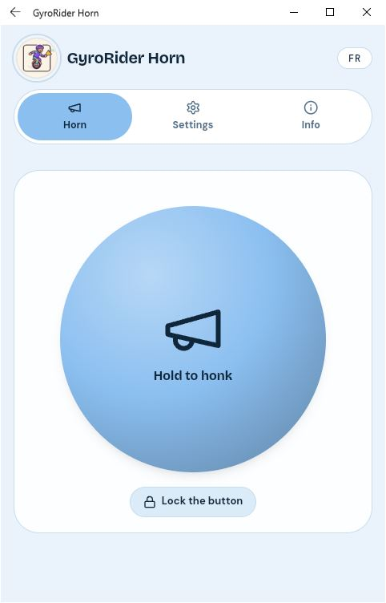
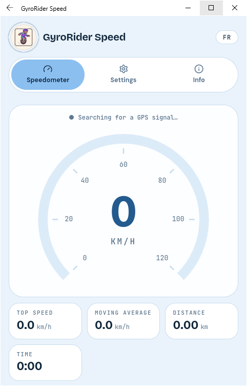

Concept visuel 01
À évaluer pour la présentation du studio ou d’une application.
Bienvenue chez GyroRider Studio. Découvre nos projets Android, conçus pour rendre les sorties, les trajets et les petits outils du quotidien plus pratiques.

Parcours les captures d’écran directement ici. Clique sur une image pour l’agrandir et utilise les flèches pour passer de l’une à l’autre.
J’ai placé ici les quatre créations Gemini pour qu’on puisse les regarder ensemble sur le site. Pour l’instant, ce sont des concepts à évaluer : on choisira ensuite lesquels utiliser pour l’accueil, GyroRider Horn ou GyroRider Speed.
À évaluer pour la présentation du studio ou d’une application.
À comparer avec les autres créations avant de choisir son emplacement.
Possibilité d’en faire un visuel de promotion, selon son contenu.
On décidera ensemble si elle mérite une place sur la page principale.
Ces projets sont présentés pour donner un aperçu de l’univers GyroRider Studio. Ils ne sont pas encore proposés au téléchargement.

Un compagnon de trajet en préparation, avec interface de conduite, GPS et réglages personnalisables.
En développementDécouvrir GyroRider SpeedGarde une trace de tes aventures en réunissant le parcours, les photos, les vidéos et la musique dans un même souvenir.
En développementDécouvrir RecaptureUne expérimentation pour explorer l’affichage multimédia en voiture, en tenant compte des restrictions de compatibilité et de sécurité.
ExpérimentalDécouvrir IPTVCarVoici ce que chaque projet cherche à accomplir. Les fonctions peuvent évoluer pendant le développement.
Un compagnon de trajet pour suivre les sorties, consulter les informations GPS et personnaliser l’expérience de conduite. Le projet est encore en développement.
Retour à la carte du projet ↑L’objectif est de réunir sur une même aventure la carte du parcours, les photos, les vidéos et la musique, puis de revoir ses souvenirs dans un récapitulatif cohérent. Le projet est en développement.
Retour à la carte du projet ↑Un prototype qui explore les possibilités multimédias en voiture. La compatibilité dépend de la plateforme et les exigences de sécurité en conduite restent prioritaires. Le projet est expérimental.
Retour à la carte du projet ↑Gratuites pour tous. D’autres projets arriveront lorsqu’ils seront prêts.